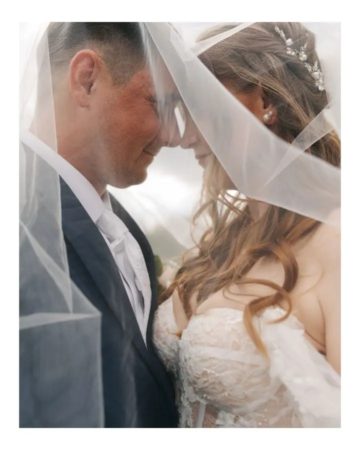
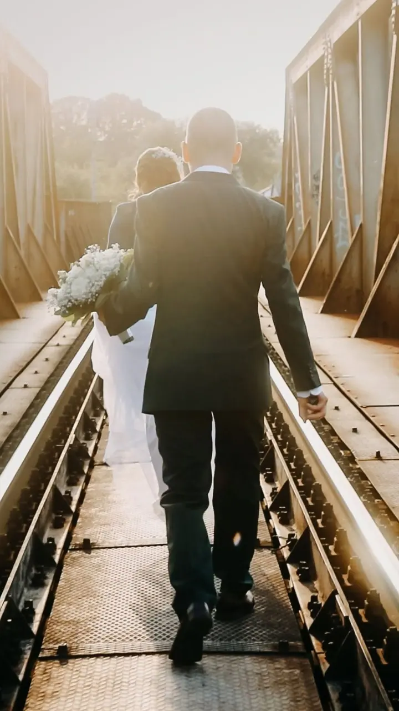
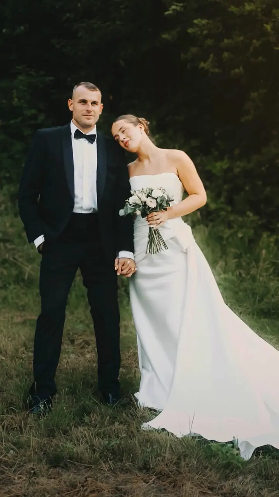
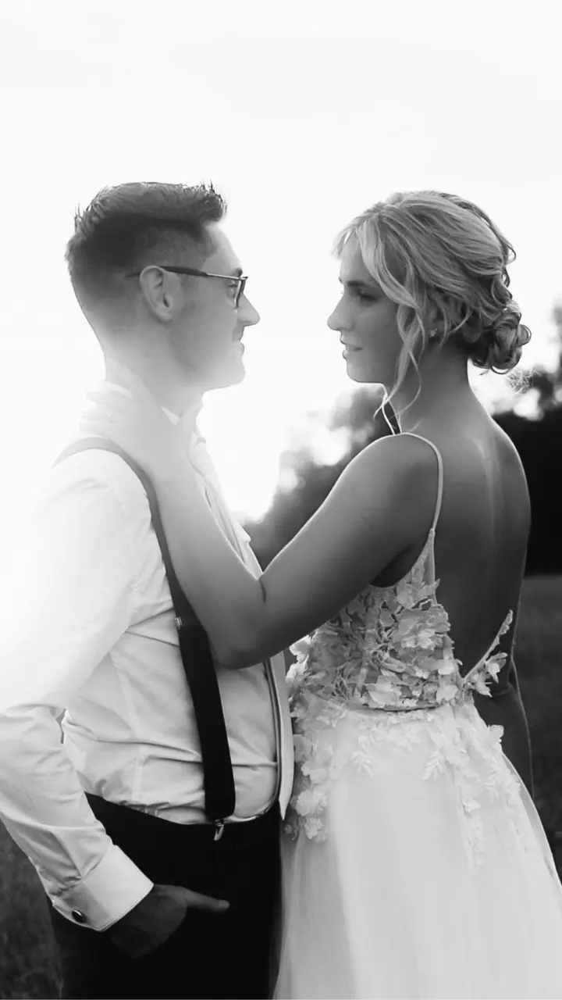
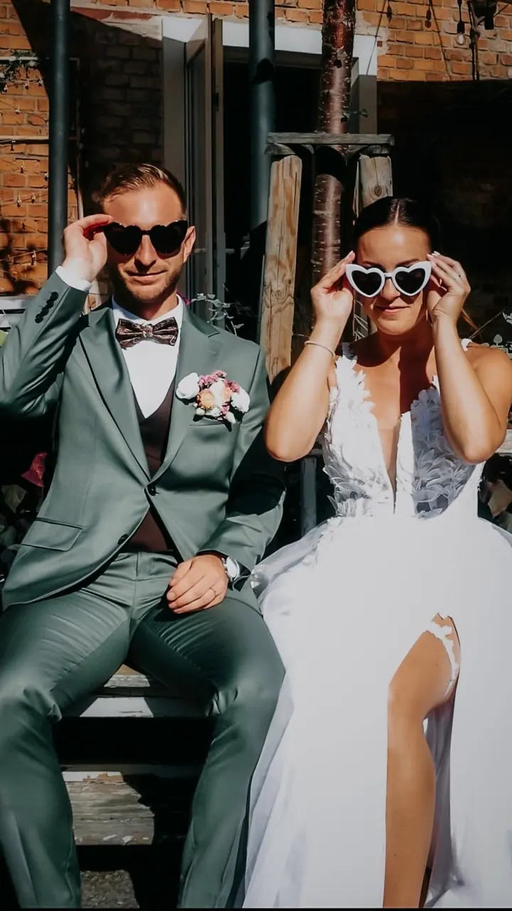

jedna
Svatby: foto i video
Svatbu vám nafotím i natočím, vyberete si balíček svatebních fotografií, videa nebo obojího. Rok 2026 je obsazený, rezervace na rok 2027 jsou otevřené.

Svatební a rodinná fotografka a kameramanka · Rožnov pod Radhoštěm a okolí, Valašská Bystřice, Dolní Bečva

Jmenuji se Nikola Mikudová, ale klidně mi říkejte Niki. Jsem fotografka a kameramanka z Rožnova pod Radhoštěm a fotím i točím svatby, rodiny a páry. Nemusíte umět pózovat, všechno vám ukážu a celým focením vás provedu.
Více o mně
Co fotím
jedna
Svatbu vám nafotím i natočím, vyberete si balíček svatebních fotografií, videa nebo obojího. Rok 2026 je obsazený, rezervace na rok 2027 jsou otevřené.
dvě
Fotím venku, v ateliéru nebo u vás doma, bez nucených póz a úsměvů na povel. Ve stylu BEST MEMORIES fotím váš obyčejný společný čas: hraní s dětmi, pečení, čtení pohádek nebo procházku se psem.
tři
Párové, těhotenské i portrétní focení venku v okolí Rožnova nebo v ateliéru. Podle toho, co vám vyhovuje, si vyberete balíček LIGHT, CLASSIC nebo PREMIUM.
Focení miminka v prvních dnech života, ideálně do 14 dnů od narození, v ateliéru, v porodnici nebo u vás doma. Probíhá v klidu a s dostatkem času na krmení, přebalování i uspávání.

Nemusíte umět pózovat, stačí být sami sebou.

Za objektivem
Vím, že u výběru fotografa nejde jen o hezké fotky. Jde hlavně o pocit. O to, jestli si dokážete představit, že přede mnou budete sami sebou: budete se smát, blbnout s dětmi, mazlit se s miminkem nebo si v klidu užijete svůj svatební den.
Jsem fotografka a kameramanka a nejvíc mě baví opravdové momenty. Drobné pohledy, upřímné úsměvy, dětský smích a chvíle, které utečou rychleji, než bychom chtěli. Fotím a točím svatby, rodiny, novorozence i děti a snažím se, abyste se u mě cítili dobře. Nemusíte se bát, že dítě nebude sedět v klidu nebo že nebudete vědět, co před foťákem dělat.
Nechci vám jen předat pár hezkých fotek. Chci, abyste si odnesli vzpomínky, ke kterým se budete vracet i za několik let a řeknete si: „Jo, přesně takoví jsme tehdy byli.“ Fotím venku v okolí Rožnova, u vás doma nebo ve svém ateliéru ve Valašské Bystřici.
Nikola
Ozvěte se přes kontaktní formulář, e-mailem, nebo si termín zarezervujte online. Na zprávy odpovídám od pondělí do pátku mezi 9. a 17. hodinou.
Domluvíme se, jestli budeme fotit venku, v ateliéru, nebo u vás doma, a vyberete si balíček, který vám sedí.
Nemusíte umět pózovat, celým focením vás provedu. Fotím v klidu, s ohledem na děti i miminka, a to nejcennější vzniká mezi pózami.
U většiny balíčků si fotky vyberete z náhledové galerie a já je pro vás upravím. U balíčků LIGHT a BEST MEMORIES je dostanete do 14 dnů.
Portfolio
Otázky
Rok 2026 už mám obsazený. Rezervace na rok 2027 jsou otevřené, obsazený mám zatím červen a červenec.
Vůbec ne. Celým focením vás provedu, a když dítě běhá nebo blbne, aspoň vzniknou ty nejpřirozenější fotky.
V ceníku pro sezónu 2027 stojí LIGHT 2 500 Kč, CLASSIC 3 000 Kč, PREMIUM 4 000 Kč a dokumentární BEST MEMORIES 5 500 Kč. Liší se délkou focení, počtem fotek a úpravami.
V ateliéru, v porodnici nebo u vás doma, ideálně do 14 dnů od narození. V té době miminko nejvíc spinká a dá se jemně polohovat.
U focení u vás doma, na zahradě nebo v přírodě je doprava do 15 km od Rožnova pod Radhoštěm zdarma, dál počítám 10 Kč za kilometr z Dolní Bečvy.
Napište pár vět o tom, co si představujete. nikusfilms@seznam.cz